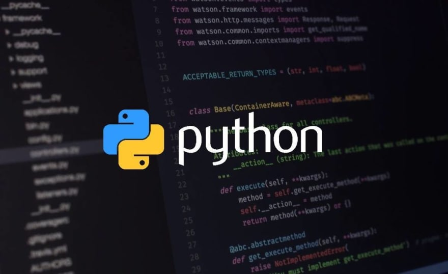
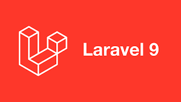

JavaScript

JavaScript adalah bahasa pemrograman yang sering digunakan untuk
membuat interaksi dinamis pada halaman web. Dengan JavaScript,
pengembang dapat menambahkan fungsionalitas seperti validasi
formulir, animasi, manipulasi elemen HTML dan CSS, serta berbagai
fitur interaktif lainnya. Salah satu keunggulan JavaScript adalah
bahwa ia dapat dieksekusi di sisi klien, yang berarti kode
JavaScript dieksekusi oleh browser pengguna, sehingga tidak
memerlukan permintaan server tambahan. Ini membuat JavaScript
menjadi alat yang kuat untuk meningkatkan pengalaman pengguna secara
langsung.
Selain itu, JavaScript juga digunakan secara luas dalam pengembangan
aplikasi web berbasis Node.js. Node.js adalah lingkungan runtime
JavaScript yang memungkinkan JavaScript dijalankan di sisi server.
Ini membuka pintu untuk pengembangan aplikasi web berbasis server
menggunakan JavaScript, yang memungkinkan pengembang untuk
menggunakan satu bahasa pemrograman untuk mengembangkan baik sisi
klien maupun sisi server dari aplikasi web mereka. Dengan
popularitasnya yang terus meningkat dan komunitas yang besar,
JavaScript menjadi salah satu bahasa pemrograman paling penting dan
berpengaruh dalam pengembangan web modern.
Python

Python adalah bahasa pemrograman yang sangat diminati karena
kemudahan sintaksisnya yang sederhana dan mudah dipahami. Itulah
sebabnya Python sering menjadi pilihan utama bagi pemula maupun
pengembang berpengalaman. Bahasa ini memiliki berbagai kegunaan yang
luas, mulai dari pengembangan web dan aplikasi desktop hingga
analisis data dan kecerdasan buatan.
Python juga terkenal karena kelengkapan perpustakaan standarnya yang
kaya, seperti NumPy untuk komputasi numerik, Pandas untuk analisis
data, dan TensorFlow untuk pembelajaran mesin. Keberadaan komunitas
pengembang yang besar dan aktif juga membuat Python semakin populer,
karena hal ini memudahkan pengguna untuk mendapatkan dukungan dan
sumber daya tambahan. Dengan segala keunggulan ini, tidak
mengherankan bahwa Python menjadi salah satu bahasa pemrograman yang
paling diminati dan digunakan di seluruh dunia saat ini.
Framework
Framework adalah kerangka kerja atau struktur yang menyediakan
serangkaian alat, aturan, dan pedoman untuk mempermudah pengembangan
perangkat lunak. Tujuan utama dari sebuah framework adalah untuk
membantu pengembang dalam membangun aplikasi dengan lebih cepat dan
efisien, dengan menyediakan struktur yang sudah ada dan memungkinkan
penggunaan ulang kode. Framework juga menyediakan solusi umum untuk
masalah yang sering dihadapi dalam pengembangan perangkat lunak,
seperti manajemen basis data, routing, keamanan, dan tampilan
pengguna. Dengan menggunakan framework, pengembang dapat fokus pada
logika aplikasi mereka tanpa harus memikirkan detail teknis yang
lebih mendasar, sehingga mempercepat proses pengembangan dan
meningkatkan konsistensi dan keandalan kode.
Reactjs

React.js adalah sebuah framework JavaScript yang digunakan untuk
membangun antarmuka pengguna pada aplikasi web secara efisien dan
mudah dikelola. Dengan menggunakan konsep komponen, React
memungkinkan pengembang untuk membagi aplikasi menjadi
bagian-bagian yang lebih kecil yang disebut komponen, yang dapat
dikembangkan, dikelola, dan digunakan kembali dengan mudah. React
juga menggunakan pendekatan virtual DOM, di mana perubahan yang
terjadi pada aplikasi direpresentasikan secara virtual sebelum
diterapkan ke DOM aktual, sehingga meningkatkan kinerja aplikasi
dengan meminimalkan jumlah operasi manipulasi DOM yang sebenarnya
dilakukan. Selain itu, React memiliki ekosistem yang kuat dengan
dukungan komunitas yang besar, serta banyaknya pustaka dan alat
bantu yang tersedia untuk memperluas fungsionalitas dan
mempercepat pengembangan aplikasi. Dengan kombinasi fitur-fitur
tersebut, React.js menjadi salah satu pilihan utama bagi
pengembang dalam membangun aplikasi web modern dan interaktif.
Laravel

Laravel adalah sebuah framework PHP yang dirancang untuk
memudahkan pengembangan aplikasi web dengan menyediakan
seperangkat alat dan fitur yang kuat namun mudah digunakan.
Framework ini mengikuti pola desain MVC (Model-View-Controller),
yang memisahkan logika bisnis, presentasi, dan logika tampilan
sehingga memungkinkan pengembangan yang terstruktur dan
terorganisir. Dengan fitur-fitur seperti routing yang intuitif,
migrasi database yang terkelola dengan baik, sistem templating
yang kuat, serta ORM (Object-Relational Mapping) yang memudahkan
interaksi dengan database, Laravel mempercepat proses pengembangan
dan meminimalkan penulisan kode secara berulang. Selain itu,
Laravel juga dilengkapi dengan berbagai pustaka dan alat bantu
yang memperluas fungsionalitasnya, seperti sistem otentikasi yang
fleksibel, pengelolaan antrian pekerjaan, dan integrasi dengan
layanan pihak ketiga. Dengan fitur-fitur ini, Laravel menjadi
pilihan populer bagi pengembang dalam membangun aplikasi web yang
skalabel, aman, dan efisien.